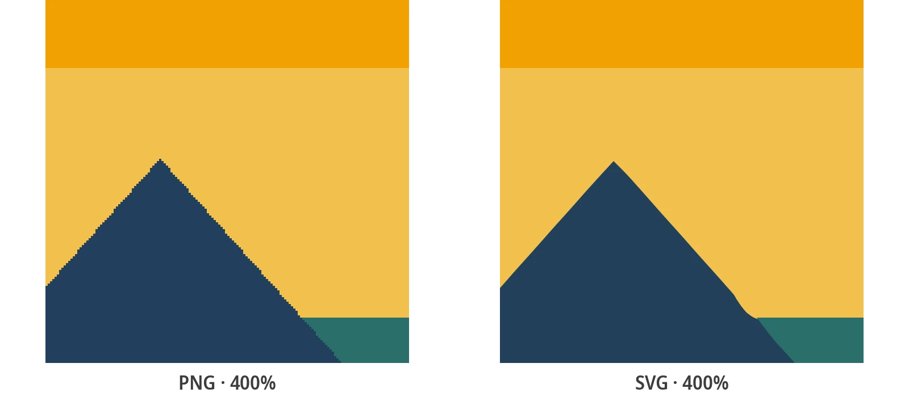

Gratis bild till SVG-konverterare
Ladda upp valfri bild - PNG, JPG, BMP eller WebP - och konvertera den till en ren, skalbar SVG-vektorfil. Gratis, omedelbart och inget konto krävs.
Hur man konverterar en bild till SVG
Tre enkla steg är allt som krävs. Ingen designbakgrund behövs.
Ladda upp din bild
Dra och släpp eller klicka för att ladda upp valfri PNG, JPG, BMP eller WebP-bild. Ingen storleksbegränsning, inga formatrestriktioner.
Välj konverteringsstil
Välj en förinställning - Svartvitt för rena linjer, Affisch för starka färger, Foto för detaljerade bilder.
Ladda ner SVG
Din vektorfil är klar på några sekunder. Ladda ner och använd den i valfritt verktyg, webbläsare eller produktionsarbetsflöde.
Faktiska resultat från konverteraren



Vad är konvertering från bild till SVG?
Att konvertera en bild till SVG innebär att omvandla en pixelbaserad rasterbild till en skalbar vektorgrafik. Rasterbilder - som PNG, JPG, BMP och WebP - lagrar visuell information som ett fast rutnät av färgade pixlar. De är utmärkta för fotografier och skärmdumpar i sin ursprungliga upplösning, men de blir suddiga och pixliga när de förstoras. SVG, å andra sidan, lagrar former som matematiska koordinater och banor, vilket gör att de kan skalas till vilken dimension som helst utan kvalitetsförlust.
Konverteringsprocessen från bild till SVG - tekniskt kallad vektorisering eller autospårning - analyserar kanterna, färgerna och formerna i din rasterbild och återskapar dem som vektorbanor. PixelToPath hanterar detta automatiskt och ger dig en ren SVG-fil från vilket bildformat som helst på några sekunder.
Varför SVG är formatet man väljer för grafik
SVG (Scalable Vector Graphics) har blivit standardformatet för logotyper, ikoner, UI-element och all grafik som måste se skarp ut i flera storlekar. Till skillnad från rasterformat skalas SVG utan försämring - det är samma fil oavsett om du visar den med 24 pixlar eller trycker den på 2 meter.
Att konvertera dina bilder till SVG låser upp funktioner som rasterformat inte kan erbjuda:
- Oberoende av upplösning: renderas perfekt på standardskärmar, Retina-skärmar, 4K-skärmar och tryck
- Helt redigerbar: öppna och modifiera filen i Adobe Illustrator, Inkscape, Figma eller valfri SVG-redigerare
- Kompakt och webb-vänligt: SVG är ofta mindre än PNG för logotyper och ikoner, laddas snabbare och kan animeras
- Maskinkompatibelt: laserskärare, vinylplottrar och brodermaskiner accepterar alla SVG som indata
Varför PixelToPath för konvertering av bild till SVG?
PixelToPath kombinerar enkelhet, kvalitet och integritet i en genuint gratis upplevelse för konvertering från bild till SVG.
Gratis utan begränsningar
Inga krediter, inga betalväggar, inga filantalsbegränsningar. Konvertera valfri bild till SVG så många gånger du behöver.
Alla format accepteras
PNG, JPG, BMP, WebP - ladda upp vilket vanligt rasterformat som helst och få en ren SVG tillbaka på några sekunder.
Smarta konverteringsförinställningar
Tre förinställningar - Svartvitt, Affisch, Foto - optimerar automatiskt spårningsalgoritmen för din bildtyp.
Fullständig integritet
Filer bearbetas och raderas omedelbart. PixelToPath lagrar, analyserar eller delar aldrig dina bilder.
Fungerar på alla enheter
Webbläsarbaserad och fullt responsiv - konvertera bilder till SVG på skrivbord, surfplatta eller mobil utan att installera något.
Skrivbordsversion tillgänglig
Föredrar du offlineanvändning? Ladda ner den kostnadsfria PixelToPath-skrivbordsappen för Windows och Linux med stöd för batchkonvertering.
Vem använder konvertering från bild till SVG?
Konvertering från bild till SVG är en av de mest allmänt användbara operationerna inom digital design. Här är vem som behöver det och varför:
- Grafiska designers: konvertera kundlevererade rasterlogotyper, skannad konst eller digitala illustrationer till redigerbara vektorfiler
- Webbutvecklare: ersätt tunga PNG-sprites med lätta inbäddade SVG:er för skarpare gränssnitt som laddas snabbare
- Innehållsskapare och marknadsförare: förbered varumärkesgrafik, tillgångar för sociala medier och tryckfärdiga vektorer från befintliga bilder
- Pysslare och skapare: vektorisera designer för användning med Cricut, Silhouette eller vilken vinyl- och laserskärmaskin som helst
- Utbildare och studenter: förstå vektorgrafik genom att konvertera välbekanta bilder och undersöka de resulterande SVG-banorna
Oavsett om ditt arbetsflöde är professionellt eller kreativt är konvertering av bilder till SVG med PixelToPath den snabbaste vägen från raster till vektor.
Relaterade konverteringsverktyg
Behöver du en formatspecifik konverterare? Prova dessa gratisverktyg.
Vanliga frågor
Vilka bildformat kan jag konvertera till SVG?
PixelToPath accepterar PNG, JPG/JPEG, BMP och WebP som inmatning. Alla fyra formaten kan konverteras till SVG gratis, utan att något konto eller programvara krävs.
Hur lång tid tar konvertering från bild till SVG?
De flesta konverteringar slutförs på bara några sekunder, direkt i din webbläsare. Den exakta tiden beror på bildens komplexitet och din enhet, men det finns ingen serverkö eller väntetid.
Kan jag konvertera ett foto till SVG?
Ja. Använd förinställningen Foto för fotografiska bilder. Resultatet blir en stiliserad, vektorspårad version av fotot - idealiskt för affischeffekter, screentryck och konstnärliga projekt. För en exakt bildpunkt-för-bildpunkt-reproduktion förblir rasterformat bättre lämpade.
Är den resulterande SVG:n redigerbar?
Helt och hållet. SVG är ett öppet, XML-baserat format. Öppna filen i Adobe Illustrator, Inkscape, Figma, Affinity Designer eller valfri SVG-redigerare för att ändra banor, ändra färger, ta bort element eller kombinera med annan konst.
Behöver jag skapa ett konto för att konvertera bilder till SVG?
Inget konto behövs - någonsin. PixelToPath är helt gratis och anonymt. Öppna verktyget, ladda upp din bild, ladda ner din SVG. Det är allt.
Konvertera din bild till SVG just nu
Gratis, omedelbart, inget konto behövs. Ladda upp din bild och ladda ner en ren SVG-vektor på under en minut.
Stöd öppen källkodsutveckling
PixelToPath är gratis att använda. Om detta verktyg hjälpte dig att spara tid, överväg att bjuda mig på en kaffe.
❤️ Donera på Ko-fi